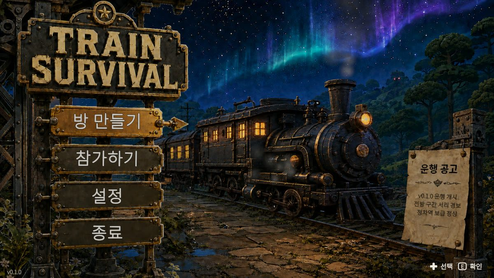
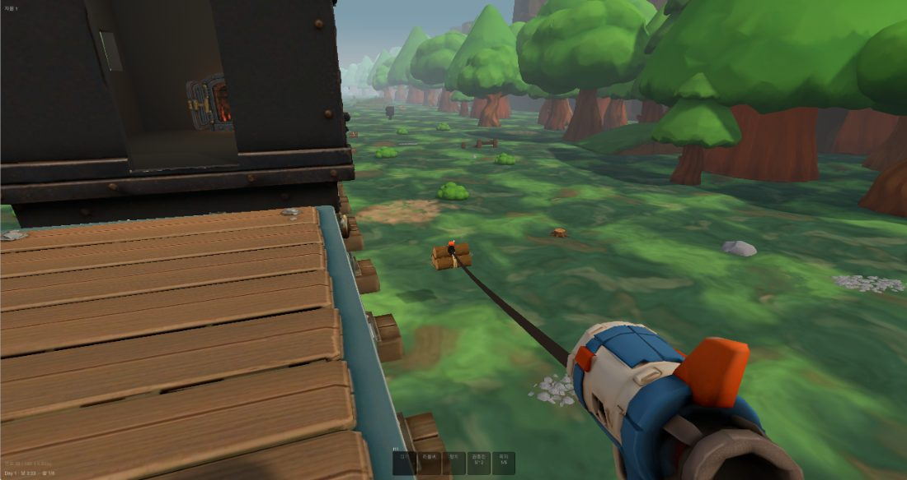
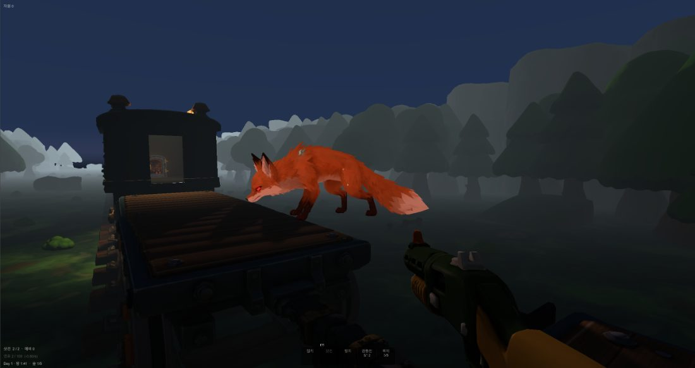
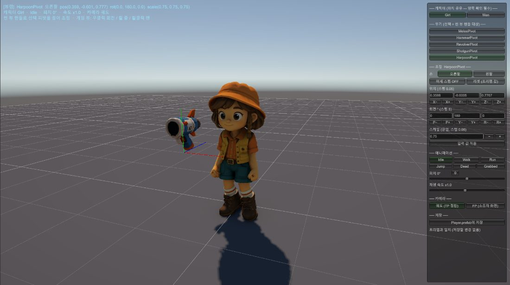

2026 넥토리얼 · For Game Programmer
구현하고, 재고,
도구로 남겼습니다
Unity 6 · C#으로 1~4인 협동 네트워크 게임 Train Survival을 혼자 기획·구현·검증하고 있습니다. 기능을 돌아가게 만드는 데서 멈추지 않고, 실패 조건을 먼저 정의하고 수치로 판정한 뒤, 그 판정을 사람이 아니라 도구가 하게 옮기는 방식으로 일합니다.
- 지원 직무
- 게임 프로그래머 (클라이언트)
- 대표 프로젝트
- Train Survival · 1인 개발
- 기간
- 2026.07.17 – 진행 중
- 기술
- C# · Unity 6 · Netcode · Steamworks
런타임 446 · 테스트 122
[Test] 선언 기준
규약 · LFS · CI 연동
에디터 12 · node 958줄
반복 편차 0.8 %
코드·커밋·테스트 수치는 2026-09-07 기준으로 저장소를 직접 집계한 값입니다.
성능 수치는 빌드 자동 주행 벤치의 실측값입니다. 저장소·CI 로그·설계 문서는 전부 공개돼 있습니다.

공고의 문장에, 프로젝트의 증거로 답합니다
기술 키워드를 나열하는 대신 공고가 적은 항목마다 이 문서 안의 근거 위치를 붙였습니다. 수치는 전부 저장소·CI 실행 이력·계측 로그에서 확인된 값입니다.
| 공고가 적은 항목 | 제가 제출하는 증거 | 위치 |
|---|---|---|
| C#을 활용해 게임 콘텐츠와 시스템을 구현 | 집게·열차·건축·전투·지역 5개 시스템을 Unity 6에서 구현. 규칙 계산을 MonoBehaviour 밖 순수 함수로 빼고 컴포넌트는 결과를 배치만 합니다. |
→ 03 |
| 자료구조·알고리즘 지식을 코드로 구현 | 순회를 공간 단위로 축소해 O(몬스터×전체 건축물) → O(몬스터×칸 내), 평탄 리스트 + 계산 인덱싱, Day 번호 하나에서 지역 상태 전량 파생, 결정론 불변식을 테스트로 고정. | → 04 |
| 기존 코드를 분석하고 디버깅·리팩터링·최적화 | 나흘간 CI를 죽이던 네이티브 세그폴트를 이등분 4회로 어트리뷰트 한 줄까지 규명. 문서상 최적화 1순위를 실측으로 기각하고 최하위를 채택해 GPU 프레임 −6.3 %. | → 05 |
| 개발 생산성 향상을 위한 툴 제작 및 자동화 | 자동화·도구 14건. CI 벽시계 17:38 → 9:54, 임포트 후처리로 화면 삼각형 −41.0 %, 회귀 판정을 종료 코드 하나로 압축. | → 06 |
| 생성형 AI 도구로 코드를 작성·검증 | 제약을 저장소에 규약으로 고정하고, 완료 조건을 grep으로 검사 가능한 문장으로 정의하고, 결과를 테스트·플레이 계측·대조군으로 판정합니다. 채택뿐 아니라 기각한 결과와 근거도 남깁니다. |
→ 08 |
| 게임을 직접 기획하고 완성해 본 경험 | 기획서·네트워크 아키텍처 결정서를 코드보다 먼저 쓰고, 수직 슬라이스 → 코어 루프 → 시스템 확장 → 아트 순으로 M8까지 진행 중. 출시 목표 2027.02. | → 02 |
| OOP 이해 · 다른 사람이 읽기 쉬운 코드 | 어셈블리 6개로 계층 의존을 한 방향만 열어 역참조를 컴파일 에러로 만들고, 상태는 읽기 계약과 변이 API를 타입으로 분리했습니다. | → 09 |
| Git 등 협업 도구 활용 | 커밋 902회에 커밋 컨벤션·LFS·Unity YAML 머지 드라이버·pre-commit 훅·GitHub Actions CI를 붙여 운용 중. | → 09 |
| 네트워크·소켓 프로그래밍 이해 또는 경험 | Netcode for GameObjects + Steam Sockets. 상태별 권위를 분리하고 월드 오브젝트의 상시 위치 재전송을 0건으로. RTT 60 ms를 주입해 100회 이상 실측. | → 07 |
| Unity 등 게임 엔진 활용 프로젝트 | Unity 6 (6000.5.3f1) · URP 17.5 · Input System · Netcode · Steamworks.NET · AssetPostprocessor · 에디터 확장 12종. | → 06 |
멈추면 죽는 열차에서, 낮에 모으고 밤에 버팁니다
1~4인 협동 생존 크래프팅 · PC / Steam · Unity 6 · Netcode for GameObjects · 1인 개발 (기획 · 클라이언트 · 네트워크 · QA)


연료가 시계다
자동 충전이 아니라 기관차에 직접 넣어야 해서 채집 → 운반 → 투입이라는 협동 동선이 생깁니다.
하루마다 오른다
웨이브 물량과 몬스터 종류가 늘고, 3~5일마다 지역(숲·사막·대초원·북극)이 바뀝니다.
중간 저장 없음
런은 단일 세션으로 완주합니다. 궤도 도약 기관을 완성해 대기권을 벗어나면 클리어입니다.
1인 전 범위
기획·게임플레이·UI·렌더링·네트워크·테스트·CI·프로파일링·QA 도구를 전부 직접 맡았습니다.
진행 상태 — 코어 루프와 네트워크 수직 슬라이스 구현 완료, 지역·전투·생존 확장 완료, Steam 통합/최종장/아트 패스 진행 중. 마일스톤마다 구현 계획서에서 범위·비범위·완료 기준을 먼저 정하고, 끝난 뒤 플레이 검증 문서에 결과를 적었습니다 — 검증 문서 24편 · 항목 761개. 자동 테스트가 다루지 못하는 연출·손맛·네트워크 타이밍은 여기서 사람이 검증하는 항목으로 따로 관리합니다.
C#으로 만든 다섯 개의 시스템
각 시스템은 "무엇을 하는가"보다 "어떤 구조로 성립시켰는가"를 먼저 적었습니다. 공통 원칙은 하나입니다 — 규칙이 되는 계산은 엔진 타입 밖으로 뺀다.
공고 · C#을 활용해 게임 콘텐츠와 시스템을 구현집게 — 지연 0과 호스트 확정 사이에 손맛을 놓는다
발사 → 명중 → 호스트 승인 → 견인 → 획득이 하나의 파이프라인입니다. 쏜 클라이언트가 즉시 연출을 재생하고 승인·거부는 호스트가 확정합니다.
조작 상태와 훅 비행 상태를 서로 다른 두 상태 기계로 분리했고, 승인 판정은 순수 함수라 EditMode에서 전 경계를 검사합니다. 대상은 IGrabbable 한 계약으로 묶여 자원·몬스터·보따리가 같은 코드를 탑니다.
열차 — 부서지고, 떨어져 나가고, 다시 붙는다
칸과 연결부에 각각 내구가 있습니다. 칸이 부서지면 그 뒤 편성 전체가 이탈해 뒤로 밀려나고, 손잡이를 잡아 사람 힘으로 끌어와야 다시 붙습니다.
모든 서버 변이가 같은 네 단계를 지납니다 — 스냅샷 → 순수 함수 판정 → 일괄 반영 → 이벤트 발행. 판정이 NetworkList API에 묶여 있지 않아 부분 적용 상태가 복제될 여지가 없습니다.
건축 — 칸의 개성은 위에 짓는 것이 만든다
갑판이 1 m 셀 그리드이고 그 위에 건축물 7종을 90° 단위로 놓습니다. 원안의 "온실칸·무기고칸" 같은 칸 종류 분화를 폐기하고, 차이는 그 위에 무엇을 짓느냐가 만들게 했습니다.
배치·점유·회전·피해 판정은 순수 static 함수가 처리하고, 종류별 효과(차폐·난방·창고 블록·비용)는 카탈로그의 필드입니다.
새 건축물을 추가할 때 늘리는 것은 코드가 아니라 에셋 항목전투 — 시드 하나로 전 피어의 탄착을 맞춘다
쏜 사람이 시드를 만들어 지연 0으로 즉시 연출하고, 호스트가 그 시드를 브로드캐스트하면 다른 피어가 같은 시드로 펠릿 궤적을 재계산합니다. 난수를 복제하지 않고 모두가 같은 탄착을 봅니다.
무기 차이는 전부 설정 에셋 안에 있습니다 — 연사·펠릿 수·산탄각·장탄·재장전이 전부 필드입니다.
샷건과 볼트액션이 컴포넌트 코드 0줄로 성립 · 데미지는 호스트가 거리·펠릿 상한을 재검증한 뒤 확정지역 · 사이클 — Day 번호 하나에서 전부 파생된다
지역 인덱스·지역 내 일차·마지막 날 여부·다음 지역 예고·순환 횟수가 전부 Day 번호 하나에서 순수 함수로 파생됩니다. 그래서 지역 컨트롤러는 NetworkBehaviour조차 아닌 일반 MonoBehaviour입니다.
복제할 것이 늘지 않으므로 피어 간 어긋날 여지 자체가 없습니다.
숲·사막 2종으로 시작했지만 후반에 대초원·북극을 추가할 때 코드 변경 0줄계산을 엔진 타입 밖으로
게임 규칙이 되는 계산은 MonoBehaviour·NetworkBehaviour 안에 두지 않습니다. *Math/*Logic 55개 파일이 Unity 의존 없는 static 함수로 분리되어 있고, 컴포넌트는 그 결과를 배치하는 일만 합니다.
"칸 3개가 파괴되면 뒤쪽 편성이 통째로 이탈하는가" 같은 규칙을 플레이 모드에 들어가지 않고 입력값만 구성해 검사할 수 있습니다.
EditMode 테스트 1,429개가 씬 없이 수 초 안에 돕니다 — 재능이 아니라 계산을 어디에 두느냐의 문제였습니다비용이 콘텐츠에 비례하지 않게 만든 다섯 가지
협동 네트워크 게임에서는 자료구조 선택이 곧 대역폭·프레임 비용·동기화 난이도가 됩니다. 아래는 그 선택이 실제로 무엇을 지웠는지 적은 것입니다.
공고 · 자료구조, 알고리즘 등 컴퓨터공학 지식을 코드로 구현순회 범위를 전체 목록에서 공간 단위로 축소
콘텐츠 증가가 프레임 비용으로 되돌아오지 않는 구조로 전환
평탄 리스트 + 계산 인덱싱 — 순번을 버리고 발급 Id로
NetworkList 하나에 담아 i × 슬롯수 + 칸 내 인덱스로 찾습니다. 소유 관계는 NetworkList<ushort> 한 줄이 담보하고, 설치는 append · 파괴는 swap-remove입니다.상태를 복제하는 대신 하나의 값에서 파생
NetworkList<ulong> 하나. 이름은 칸 번호에서, 호스트 여부는 "첫 칸" 규칙에서, 접속 상태는 "목록에 있음"에서 파생합니다.결정론 — 난수를 복제하지 않고 같은 결과를 만든다
(스폰 위치, 스폰 시점 누적 거리, 현재 누적 거리) 세 값만의 순수 함수로 유도합니다.매 프레임 도는 경로에서 할당을 걷어낸다
물리 쿼리도
RaycastNonAlloc으로, 스폰·소멸은 전량 풀링으로 통일증상에서 원인까지 거리가 먼 문제들
아래 다섯 건은 전부 "보이는 곳에 원인이 없던" 문제입니다. 짐작으로 고쳤다면 멀쩡한 코드를 건드렸을 사건들이라, 좁혀 간 과정을 그대로 적었습니다.
공고 · 기존 코드를 분석하고 디버깅·리팩터링·최적화 작업을 수행나흘간 CI를 죽이던 네이티브 세그폴트를 이등분 4회로 어트리뷰트 한 줄까지
signo:11 세그폴트로 나흘 연속 죽었습니다. 게다가 크래시는 결과 XML에 "실패"로 남지 않아 초록 뒤에 숨었고, 원인을 찾으려면 14,000줄 로그를 손으로 뒤져야 했습니다.[MenuItem] 등록 개수였고 임계는 7이었습니다.#if !UNITY_EDITOR_LINUX로 감싸 조건 자체를 제거했습니다. 이후 한 실행에서 EditMode 1,408 · PlayMode 11 · 빌드가 함께 통과. 잡 의존 제거로 벽시계 17:38 → 9:54호스트에서만 멀쩡했던 한 프레임 — 실행 순서가 만든 지연
Update에서 위치를 읽는데 파지 부착은 LateUpdate에서 대상을 옮기고 있었습니다. 호스트는 서버 견인이 Update에서도 대상을 옮겨 오차가 가려졌고, 비호스트는 부착이 유일한 이동 경로라 지연이 그대로 드러난 것입니다.DefaultExecutionOrder로 속성에 고정했습니다 — 컴포넌트가 늘어도 같은 종류의 지연이 재발하지 않습니다같은 화면 안에 좌표 프레임이 둘이었다
문서상 1순위는 적용하면 안 되는 항목이었고, 최하위가 유일한 답이었다
enableFrameTimingStats: 0이었습니다.−25.6 %를 −6.3 %로 정정 — 대조군을 세웠기 때문에
1.24 ms
gpu 1.02 > cpuMain 0.86 > cpuRender 0.40 ms — 병목을 GPU로 확정했습니다. 반복 편차 0.7~0.8 %(60초 × 3회)라 5 % 회귀를 가릴 수 있는 해상도를 함께 확보했습니다.
RTX 4060 Ti · Ryzen 5 7500F · 1920×1080 · Windows 11
이상하게 좋은 수치는 성과가 아니라 검증 신호였습니다
① Unity 6에 Draw Calls Count 카운터가 없는데 ProfilerRecorder가 예외 대신 0을 준다 ② "GPU −70.8 %"는 화면이 비어 있던 것 ③ 시나리오가 소유한 해상도를 명령행으로 덮었다고 믿을 뻔했다 ④ 도구가 노이즈 위에서 "회귀 2건"이라 단정했다 ⑤ 설정만 바꾸고 재빌드를 빠뜨렸다.
사람이 기억하던 판단을 게이트와 도구로 옮겼습니다
자동화 14건은 전부 이미 겪은 사고에서 나왔습니다. "있으면 좋아서" 만든 것은 없고, 반복될 비용이 수동 판정보다 클 때만 만들었습니다.
공고 · 개발 생산성 향상을 위한 툴 제작 및 자동화 업무 지원꺼진 게이트를 먼저 살렸다
워크플로 도입 후 55회 실행 55회 실패. 활성화 전략이 요구하는 시크릿 3종을 규명해 복구하고, "프로젝트가 CI와 안 맞는다"는 의심 9가지를 하나씩 실측으로 배제해 근거와 함께 남겼습니다.
작동하지 않는 자동화는 없는 것보다 나쁩니다 — 있다고 착각하게 만들기 때문입니다회귀 판정을 종료 코드 하나로
판정 규칙의 출처를 gates.js 한 파일로 모으고 비교기·리포터가 공유하게 했습니다. 임계는 짐작이 아니라 실측 노이즈(0.7~0.8 %)의 6~7배인 5 %로 유도했습니다.
반복 보정을 임포트 시점으로
LOD 승격과 지면 피벗 보정을 AssetPostprocessor로 옮겼습니다. 피벗은 축을 손으로 고르지 않고 InverseTransformVector로 월드 +Y를 각 메시 로컬로 환산합니다(루트가 scale 100 · rotX 270.02°).
빌드가 스스로 주행해 프레임을 잰다
측정을 3층으로 나눴습니다 — 수집기 Core, 주행기 Systems, 판정 node. -perfrun을 주면 게임이 스스로 인게임까지 들어가 60초(낮/밤 정확히 한 사이클)를 달립니다.
에셋을 한 점씩 세워 예산을 재는 방
Renderer.forceMeshLod로 단계를 강제 전환해 같은 자리에서 눈으로 비교하게 했습니다. 예산 위반은 NO_LOD·MATERIAL_SPLIT 같은 진단 코드로 뜹니다.
플레이를 멈추지 않고 자세를 잡아 프리팹에 저장
전용 씬에서 플레이 중에 씬 뷰 핸들로 무기 피벗의 위치·회전·스케일을 잡고 결과를 PrefabUtility로 Player.prefab에 바로 기록합니다. 애니메이션 6종과 시점 피치를 같은 화면에서 함께 돌립니다.

ViewLabMath로 분리해 EditMode 테스트에 고정했습니다.
.meta/GUID 검사기는 전수 스캔에서 잡을 것이 0건(파일 2,685 · .meta 1,379 양방향 대조, 누락·고아·중복 전부 0)이라 짓지 않고, 다시 여는 조건을 적어 뒀습니다. 자동화는 있으면 좋은 것을 모으는 일이 아니라 무엇을 막을지 고르는 일이라고 봅니다.
권위를 나누고, 복제할 것을 줄이고, 반응성을 숫자로 통과시켰습니다
Netcode for GameObjects + Steam Sockets 위에서 호스트 권위(P2P)로 설계했습니다. 전용 서버를 쓰지 않기로 한 판단과 그 대가까지 결정서에 남겼습니다.
공고 · 네트워크·소켓 프로그래밍, 멀티스레드 환경에 대한 이해 또는 프로젝트 경험| 상태 / 판정 | 권위 | 근거 |
|---|---|---|
| 자기 캐릭터 이동 · 시점 | 각 클라이언트 | 지연 0. 예측·보정 코드가 필요 없어집니다 |
| 사격 명중 판정 | 쏜 클라이언트 | 로컬 레이캐스트로 판정한 뒤 호스트에 보고 — 판정과 확정을 분리 |
| 데미지 적용 · 사망 확정 | 호스트 | 명중 보고를 받아 거리·펠릿 상한을 재검증한 뒤 확정 |
| 개인 인벤토리 증감 | 호스트 | 개인 소유물이라도 복제(dupe) 방지를 위해 호스트가 확정 |
| 열차 상태 · 연쇄 이탈 | 호스트 | 원자적 상태 변화로 전파. 재접속 복원의 원천 |
| 월드 스크롤 속도 | 호스트 | NetworkVariable 단 하나 — 연료 감속·추격·최종 가속의 유일한 제어 값 |
지연을 주입해 100회 이상 실측했습니다
"지연이 있어도 집게 손맛이 괜찮은가"는 느낌으로만 오가던 문제였습니다. 그래서 지표 5개와 목표치를 구현 전에 스펙에 못박고, RTT 0/60/120 ms 프로파일을 클라이언트에만 자동 주입하는 드라이버와 계측 허브를 만들었습니다.
Q1 입력 → 로컬 연출 Δ0 프레임Q2 명중 → 견인 시작 평균 67~72 ms (범위 57~85 · 목표 250)
Q3 워프 / 역행 0 · Q4 101발사 중 거부 0 = 불일치율 0 %
달성 불가능한 기준은 지표가 아니라 잡음입니다
Q2의 시작점을 처음에는 발사 입력으로 잡았는데, 투사체 비행 시간이 거리에 종속(20 m = 0.5 s)이라 원거리에서는 어떻게 해도 250 ms를 넘습니다. 시작점을 로컬 명중 판정으로 옮기고 입력 즉시성은 Q1이 따로 담당하게 나눴습니다.
계측 자체도 검사 대상입니다 — 워프·역행을 세는 분석기를 EditMode 테스트 10개로 고정했습니다. 재는 쪽이 틀리면 위의 판단이 전부 함께 틀리기 때문입니다.
"규칙상 거부(집게 등급 부족)는 Q4 불일치에 세지 않는다"까지 별도 검증 항목으로 — 세면 숫자만 나빠지고 실제 품질은 그대로입니다눈이 머무는 곳에 몰아줬습니다
동기화 주기를 대상별로 계층화했습니다 — 평시 몬스터는 12 Hz, 집게로 끌려오는 대상만 30 Hz. 수신 측은 스냅샷 버퍼로 보간해 그리고, 판정은 서버 값을 그대로 씁니다.
동시 견인은 최대 4개(플레이어 수)로 상한이 있어 총 대역폭 증가 없이 체감 반응성 확보조용히 새는 결함은 등록 시점에 죽게 만들었습니다
NGO의 INetworkPrefabInstanceHandler를 구현해 네트워크 스폰/디스폰을 풀로 라우팅했습니다. 다만 두 조건(Despawn(destroy: true), AutoObjectParentSync 해제)이 맞지 않으면 런타임에 조용히 누수합니다.
전용 서버를 쓰지 않기로 한 근거 — 1~4인 협동 PvE이고 PvP가 없습니다. 전용 서버가 존재하는 이유는 대개 치팅 방지와 대규모 동시 접속인데 둘 다 이 게임에는 없습니다. 결정서에는 기각한 대안(Photon Fusion 2)과 그 이유, 밤 웨이브 대역폭 같은 리스크와 완화책, 그리고 재검토 조건("콘솔 등으로 확장해 Steam 비종속 릴레이가 필요해질 때")까지 함께 적었습니다. 이 결정 하나가 클라이언트 예측·랙 보상 시스템을 통째로 없앴습니다.
답을 받는 것보다, 검증 가능한 질문을 만드는 데 집중했습니다
생성형 AI로 속도는 쉽게 얻지만 품질은 검증 기준이 정합니다. 그래서 제약을 저장소에 고정하고, 완료 조건을 검사 가능한 문장으로 적고, 결과를 코드·테스트·실측으로 판정하는 순서를 씁니다.
공고 · 생성형 AI 도구를 활용해 코드를 작성·검증할 수 있는 분제약을 먼저 준다
Unity 6의 C# 9.0 한계, 어셈블리 의존 방향, 풀링·이벤트·서비스 규칙을 저장소의 규약 문서로 고정해 작업 컨텍스트에 싣습니다.
문제를 쪼개 제안받는다
기능 단위가 아니라 판단 단위로 나눕니다 — 무엇이 원천이고, 무엇을 복제하고, 무엇을 순수 함수로 뺄지.
직접 판정한다
컴파일·테스트 통과 뒤에도 플레이 계측과 대조군으로 채택 여부를 정합니다. 수치가 이상하게 좋으면 수치보다 화면을 먼저 봅니다.
기각도 근거와 함께
채택한 것만 남기면 다음에 같은 후보가 다시 올라옵니다. 되돌린 구현과 그 이유를 계획서에 남깁니다.
"SOLID를 지켰다"는 확인할 방법이 없는 문장입니다
그래서 계획서마다 아키텍처 마감 게이트를 두고 원칙마다 검사 방법을 함께 적었습니다 — "신규 NetworkVariable·RPC 0건(diff에서 grep)", "무기 컨트롤러 구체 타입 참조 0건", "모델명 분기 0건", "TODO 0건".
효과가 확인되지 않은 복잡도는 남기지 않습니다
집게 견인의 순간이동을 고칠 때 두 처방을 함께 구현했습니다. 주범(RTT 간극)이 예측 고정으로 사라진 뒤 블라인드 교차 플레이에서 잔여 체감이 보고되지 않아, 나머지 하나(부착점 오프셋 유지)는 롤백했습니다.
"간극을 버퍼로 덮는 대신 간극 자체를 없애는 쪽" — 표시를 늦춰 매끄럽게 만드는 처방은 반응성을 판 대가입니다판정을 반입 전에 끝냈습니다
ChatGPT 이미지 → Tripo·Meshy → Blender → Unity 파이프라인에서, 치수·tris·영문 지시까지 명시한 생성 지시 시트 74종을 먼저 쓰고 반입 뒤에는 축·피벗·tris·LOD를 다시 실측했습니다. 무기 3종은 rotation_euler가 0인데도 메시가 13.2° · 30.1° · 15.0° 기울어 있었습니다.
규칙을 부탁하지 않고, 어길 수 없게 만들었습니다
문서 규약만으로는 실수를 막기 어렵다고 판단해, 지켜야 할 것을 가능한 한 컴파일 에러·타입·게이트로 옮겼습니다.
공고 · 객체지향 이해 · 읽기 쉬운 코드 · Git 등 협업 도구 활용역참조를 규칙 위반이 아니라 컴파일 에러로
계층마다 어셈블리를 갈라 asmdef의 참조를 한 방향으로만 열었습니다.
읽기 계약과 변이 API를 타입으로 가른다
열차 편성 상태는 HUD·칸 표현·몬스터·건축·연료가 전부 들여다보는 중심 데이터입니다. 아무나 접근할 수 있으면 어느 날 UI 코드가 표시하려고 읽다가 슬쩍 고치는 일이 생깁니다.
인터페이스에는 조회만 넣고 변이는 ServerXxx 메서드로 인터페이스 밖에 뒀습니다. 소비자는 ServiceLocator에서 ITrainState로 받으므로 변이 API에 의존하는 것 자체가 불가능합니다.
TryGetCarAtZ(이 지점은 어느 칸 위인가)처럼. 각자 편성을 순회하면 이탈 오프셋 반영을 빠뜨리는 곳이 반드시 생기기 때문입니다
커밋 902회를 규약과 게이트 위에서
커밋 컨벤션(type·scope·Unity 전용 규칙)을 문서로 고정하고, Git LFS와 Unity YAML 머지 드라이버를 설정했습니다. 커밋 훅은 워킹트리가 아니라 스테이징된 내용을 검사합니다.
폰트 아틀라스 캐시가 저장소 이력 47 MB를 먹던 것을 훅으로 차단 — 파일 4.1 MB → 8 KB, diff가 아예 생기지 않습니다. "CI는 커밋이 된 뒤에 돈다"는 것이 훅을 만든 이유입니다계획 / as-built 명세 / 규약을 나눴습니다
차수마다 구현 계획서에서 범위·비범위·완료 기준을 먼저 정하고, 끝난 뒤 결과를 as-built 명세로 옮겨 계획 문서와 현재 상태를 분리했습니다. 문서 127편이 저장소에 있습니다.
결함뿐 아니라 버그가 아닌 것으로 판정한 근거와 준비 비용 때문에 보류한 항목도 함께 기록합니다 — 미검 항목은 번호를 유지한 채 이월해 반복 지연이 드러나게 했습니다1인 개발이지만 다음에 읽을 사람이 있다는 전제로 만들었습니다. 저장소는 공개돼 있고 코드·설계 문서·CI 실행 로그·플레이 검증 기록을 전부 열람할 수 있습니다.
코드를 읽고, 재고, 고치며,
다음 사람이 확인할 수 있는 기준으로 남기겠습니다
이 프로젝트에서 가장 많이 배운 것은 기능을 만드는 방법이 아니라, 내가 만든 것이 정말 좋아졌는지 판정하는 방법이었습니다. 측정하지 않으면 문서에 적힌 1순위가 사실은 적용하면 안 되는 항목일 수 있고, 대조군을 세우지 않으면 −6.3 %를 −25.6 %로 남기게 됩니다.
넥슨의 게임과 플랫폼에서도 같은 방식으로 일하고 싶습니다 — 남의 코드를 먼저 읽고, 증상과 원인 사이의 거리를 좁히고, 반복될 판단은 사람이 아니라 도구가 하게 옮기는 방식으로.